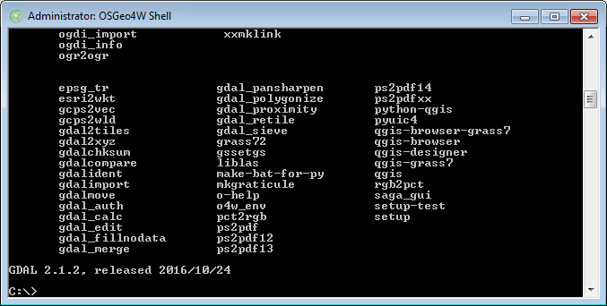
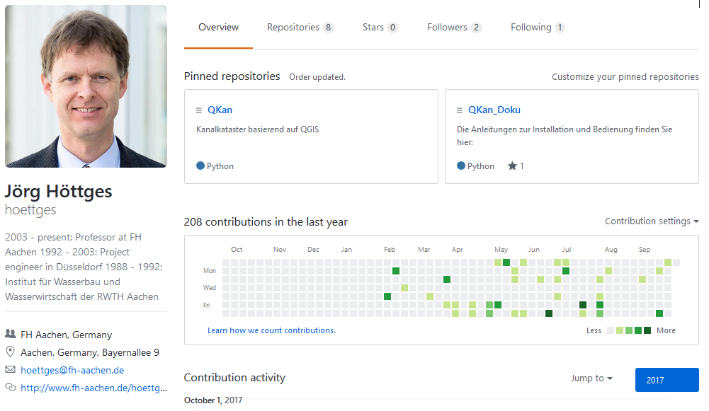
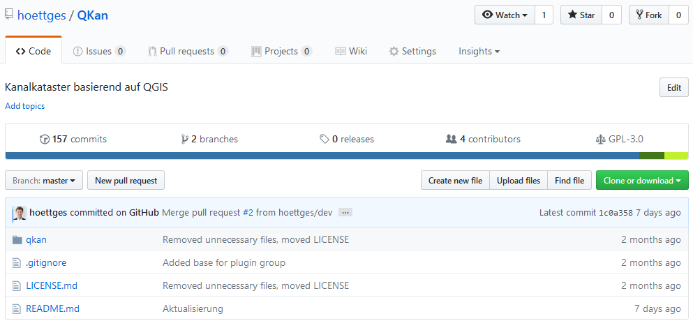
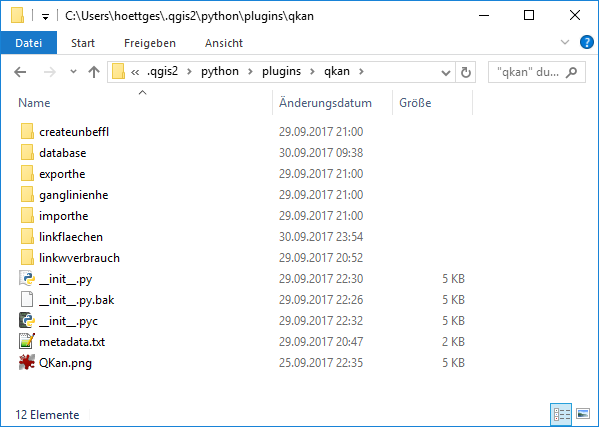

1. Verarbeitung von befestigten und unbefestigten Flächen¶
Abflusswirksame Flächen, z. B. Dachflächen, Parkplätze, Straßen, werden in QKan in der Tabelle “flaechen” verwaltet. Diese werden mit Hilfe des Attributs “abflussparameter” klassifiziert, und in der entsprechenden Tabelle “abflussparameter” sind die für die hydraulische Berechnung benötigten Parameter gespeichert. In dieser Tabelle ist wiederum ein Attribut “bodenklasse” enthalten, das für durchlässige Flächen die Versickerungsparameter enthält. Unbefestigte Flächen sind in QKan dadurch gekennzeichnet, dass entweder keine Bodenklasse oder aber eine Bodenklasse zugeordnet ist, deren Durchlässigkeit 0 ist.
1.1. Zuordnung von Flächen zu Haltungen¶
Die Zuordnung der abflusswirksamen Flächen zu den Haltungen des Kanalnetzes stellt bei der Vorbereitung einer hydrodynamischen Simulation einen aufwändigen Arbeitsschritt dar. Deshalb enthält QKan Funktionen zur automatischen Verknüpfung und zur Plausibilitäskontrolle.
1.2. Grundprinzip¶
Die abflusswirksamen Flächen werden mittels Linien mit den Haltungen verbunden, die von einem Punkt innerhalb der jeweiligen Fläche zur Haltung führen und im Layer “Anbindungen Flächen” (QKan-Tabelle “linkfl”) gespeichert werden. Maßgebend für die Zuordnung der abflusswirksamen Flächen sind diese Verbindungslinien sowie die Haltungsflächen, die im Layer “Haltungsflächen” (QKan-Tabelle “tezg”) gespeichert werden.
Es wird unterschieden zwischen Flächen, die als ganzes zugeordnet werden und großen Flächen, die sich über mehrere Haltungsflächen erstrecken und deshalb aufgeteilt werden müssen. Für diese muss der Anwender in der Tabelle “flaechen” das Attribut “aufteilen” aktivieren bzw. “ja” eintragen. In diesem Fall wird für jedes Teilstück, das in einer anderen Haltungsfläche liegt, eine eigene Verbindungslinie angelegt.
Die Verbindungslinien können jederzeit manuell nachbearbeitet, ergänzt oder gelöscht werden. Maßgebend für den Anwender sind ausschließlich die sichtbaren Verbindungslinien!
Der Algorithmus ist so angelegt, dass die abflusswirksamen Flächen nach dem Import aus einem externen Datenbestand während der gesamten Bearbeitung im Original erhalten bleiben. Sie brauchen also nicht vorher durch den Anwender aufgeteilt zu werden. Der Anwender sollte die Flächen lediglich so vorbereiten, dass keine Überschneidungen und “Löcher” mehr vorhanden sind, wozu QGIS mehrere Werkzeuge enthält.
Erst beim Datenexport in das Simulationsprogramm wird die Aufteilung der mit dem Attribut “aufteilen” markierten Flächen mittels Verschneidung mit den Haltungsflächen vorgenommen. Das hat den Vorteil, dass der Anwender jederzeit Änderungen an den Flächen, Haltungsflächen oder Kanalnetzdaten vornehmen kann, um dann erneut die Daten in das Simulationsprogramm zu exportieren.
1.3. Teilgebiete¶
Bei größeren Entwässerungsnetzen ist es hilfreich, die Bearbeitung nacheinander für mehrere Teilgebiete vorzunehmen. In QKan dient dazu ein entsprechender Layer “Teilgebiete” (QKan-Tabelle “teilgebiete”). Alle für die Flächenaufteilung verwendeten Layer enthalten ein entsprechendes Attribut, mit dem die automatische Erzeugung der Verbindungslinien eines oder mehrere ausgewählte Teilgebiete beschränkt werden kann.
2. Vorgehen bei der Flächenzuordnung¶
2.1. Import der abflusswirksamen Flächen¶
Ausgangspunkt für die nachfolgend beschriebenen Arbeitsschritte ist ein bestehendes QKan-Projekt. Empfehlenswert ist es, dieses durch Import aus einem der in QKan verfügbaren Datenformate (HYSTEM-EXTRAN, Kanal++) zu erzeugen. Die entsprechende Datei des Simulationsprogramms sollte bereits Kanaldaten enthalten; es ist aber auch möglich, eine leere Datei zu verwenden, die vorher mit dem gewünschten Simulationsprogramm angelegt wurde.
Die abflusswirksamen Flächen können mit QGIS aus einer Vielzahl von Datenquellen übernommen werden. Empfehlenswert ist es dabei, zunächst die Daten mit QGIS in einen zusätzlichen Layer zu laden. Anschließend können die Flächen mit “Copy & Paste” in den Layer “Flächen” übertragen und der zusätzliche Layer wieder entfernt werden.
2.2. Erzeugen der unbefestigten Flächen¶
In der Regel enthalten die Datenbestände der abflusswirksamen Flächen nur befestigte Flächen. Für die Verarbeitung in QKan ist es empfehlenswert auch für die unbefestigten Flächenanteile entsprechende Flächenobjekte anzulegen. Hierzu dient die Funktion “Erzeuge unbefestigte Flächen...”. Voraussetzung ist, dass im Layer “Haltungsflächen” Flächen vorhanden sind, die das Entwässerungsgebiet in Teilflächen unterteilen, die den einzelnen Haltungen zugeordnet sind. Diese Haltungsflächen beziehen sich ausschließlich auf den Niederschlagsabfluss, so dass bei der Erstellung nur das Mischwasser- und Regenwassernetz zu berücksichtigen ist.
Die Haltungsflächen enthalten folgende Attribute, die bei der Erzeugung der unbefestigten Flächen übernommen werden, und deshalb vorher entsprechend bearbeitet werden sollten (aber nicht müssen):
- regenschreiber
- neigkl
- abflussparameter
- haltnam
- teilgebiet
2.3. Festlegung eines Teilgebietes¶
Vor dem Datentransfer in ein Simulationsprogramm wird durch QKan eine “Bereinigung” durchgeführt, bei der die Verbindungslinien in interne Zuordnungsspalten übertragen werden, die wie ein Cache wirken und
3. QKan - Step by Step Installation¶
Willkommen beim Step by Step Tutorial zur Installation von QKan mit dem Betriebssystem Windows. QKan kann auch unter Linux verwendet werden, wo es teilweise entwickelt wurde. Die nachfolgenden Schritte sind dort in ähnlicher Weise durchzuführen.
Um QKan auf einem Computer neu einzurichten sind einige Arbeitsschritte notwendig, welche Ihnen im Folgenden vorgestellt werden:
3.1. Schritt 1: QGIS Installieren¶
QKan basiert auf dem Open-Source-Programm QGIS. Deshalb wird dieses als erstes benötigt. Die aktuelle Version von QGIS finden Sie hier: QGIS oder falls dieser Link nicht funktioniert könne Sie manuell www.QGIS.org aufrufen.
Die aktuelle Version von QGIS (Stand Februar 2017) trägt die Versionsnummer 2.18.7. (Beachten Sie bitte den Hinweis zur Version unter Kap. 3.3.) Durch Klicken auf den “Jetzt herunterladen”-Button auf der Startseite werden Sie sofort zur Downloadseite weitergeleitet. Gehen Sie vorher sicher, dass Ihnen genügend freier Speicherplatz zur Verfügung steht, da die QGIS-Installation etwa 1,5 GB Speicherplatz einnehmen wird. Wählen Sie in Abhänigkeit von Ihrem Betriebssystem und Ihrer Betriebssystem-Version einen Downloadlink aus. In diesem Beispiel verwenden wir die unter dem Punkt “Für Windows herunterladen” zu findende Version “Eigenständige QGIS-Installation Version 2.18 (64bit)”:

Wählen Sie ein entsprechendes Verzeichnis zum Speichern der Installationsdatei und führen Sie diese anschließend aus. Bestätigen Sie die Installation, aktzeptieren das Lizenzabkommen und wählen anschießend das Verzeichnis, in dem QGIS installiert werden soll. Sie können auch einfach auf den Weiter-Button klicken, um es im Standartverzeichnis “C:\Programme\QGIS 2.18” zu installieren. Als letzes wird QGIS Sie nach den zusätzlichen Komponenten, wie zum Beispiel dem North Carolina Data Set fragen:

Für die Nutzung von QKan wird keine dieser zusätzlichen Komponenten benötigt. Sollte QGIS jedoch noch für andere Zwecke genutzt werden, können diese Komponenten noch Verwendung finden. Beachten Sie, dass sich der benötgte Speicherplatz entsprechend erhöht, wenn Sie sich dazu entscheiden, die zusätzlichen Komponenten zu installieren. Klicken Sie anschließend auf “Installieren”, um die Installation zu starten. Diese Installation kann einige Minuten in Anspruch nehmen.
3.2. Schritt 2: Firebird Installieren¶
Vor der Installation der Plugins, die für QKan entwickelt wurden, muss zunächst die Datenbankanwendung Firebird installiert werden. Sie wird für den Zugriff auf die HYSTEM-EXTRAN-Dateien (*.idbf) benötigt. Einen Link zum Download finden sie hier: Firebird oder Sie besuchen www.firebirdsql.org und wählen dort unter dem Reiter “Downloads” den Punkt Firebird 2.5 aus.
Auf der Seite befinden sich änhlich wie bei der QGIS Installation wieder mehrere Downloadlinks. Benötigt wird der “Installer for Superclassic/Classic or Superserver”. Wählen Sie auch hier wieder den für Ihr Betriebssystem und Version passenden Link aus. In diesem Beispiel verwenden wir den “Windows executable installer for full Superclassic/Classic or Superserver, recommended for first-time users” für Windows 64-bit:

Über diesen Link werden Sie zu einem Downloadportal namens sourceforge.net weitergeleitet, wo nach wenigen Sekunden der Download starten sollte. Sollte es Probleme mit dem Download geben, beachten Sie bitte die Hinweise auf der Seite. Anschließend starten Sie die heruntergeladene Datei Setup.exe. Aktzeptieren Sie auch hier wieder die Lizenzvereinbarungen. Wählen Sie ein Verzeichnis, um Firebird zu speichern oder verwenden Sie das Standartverzeichnis “C:\Program Files\Firebird\Firebird_2_5”. Gehen Sie nun sicher, dass Sie bei der Installation der Komponenten den Punkt “Super Server Binärdateien” ausgewählt haben.

Als nächstes wird Firebird einen Startmenü-Ordner anlegen. Dieser wird nicht unbedingt benötigt und kann durch die Checkbox “Keinen Order im Startmenü erstellen” verhindert werden. Anschließend wird eine Abfrage über die zusätzlichen Aufgaben von Firebird erscheinen. Gehen Sie sicher, dass Ihre Auswahl wie folgt aussieht:

Bevor die Installation fertiggestellt werden kann, werden noch zwei Checkboxen erscheinen:

Der Punkt “After installation - What Next?” bringt Sie zurück auf die Firebirdseite und bietet weitere Informationen zur Nutzung von Firebird. Die zur Nutzung von QKan benötigten Informationen bekommen Sie jedoch hier. Um zu testen ob der Firebirdserver auch richitg auf Ihrem System läuft, öffnen Sie den Taskmanager und suchen unter dem Reiter Prozesse nach “fbserver.exe”.
3.3. Schritt 3: Zusätzliche Python-Module¶
Nun müssen einige in QGIS enthaltene Module aktualisiert beziehungsweise ergänzt werden. Da Installationen nur mit Administrator-Rechten ausgeführt werden können, müssen Sie zunächst die “OSGeo4W Shell” als Administrator ausführen, um dort die weiteren Schritte vornehmen zu können. Falls Sie keinen Administrator-Zugang haben, wenden Sie sich an Ihren IT-Administrator, damit er die nachfolgenden Schritte ausführt.
3.4. Schritt 3.1: Starten der “OSGeo4W Shell” mit Administrator-Rechten¶
Das Vorgehen unterscheidet sich etwas, je nachdem, welche Version von Windows Sie haben.
Unter Windows 7 klicken Sie im Startmenü mit der rechten Maustaste auf “OSGeo4W Shell” und wählen “Als Administrator ausführen...”. Unter Windows 10 wählen Sie stattdessen unter “Mehr” die Zeile “Am Speicherort öffnen” und Klicken wieder mit der rechten Maustaste auf die Datei “OSGeo4W Shell”, wo Sie dann ebenfalls “Als Administrator ausführen...” wählen.
Warnung
Achten Sie unbedingt darauf, die “OSGeo4W Shell” als Administrator auszuführen, da sonst kein Zugriff möglich ist!
Geöffnet sieht sie dann etwa so aus:
3.5. Schritt 3.2: pyfirebirdsql¶
Dieses Modul wird von der Programmiersprache für die Kommunikation mit der Firebird-Datenbank benötigt. Einen Link dazu finden Sie hier: pyfirebirdsql oder besuchen Sie www.gihub.com/nakagami/pyfirebirdsql.
Sie sollten sich nun auf der folgenden Seite befinden:

Wenn Sie die Seite manuell öffnen, achten Sie unbedingt darauf, dass Sie das richtige Modul auswählen. Wenn Sie auf der weiter oben angegebenen Seite angekommen sind, können Sie durch den “clone or download”-Button die Datei herunterladen. Klicken Sie erst auf “clone or download” und anschließend auf “Dowload ZIP”. Dann führen Sie den Download entsprechend ihrem Browser durch.

Sie erhalten nun eine .zip Datei mit dem Namen “pyfirebirdsql-master”. Der darin enthaltene Ordner kann jetzt entpackt und anschließend in ein beliebiges Verzeichnis verschoben werden. Um das Modul zu installieren, müssen Sie in der bereits geöffneten “OSGeo4W Shell” mit Hilfe der Befehle “cd” in das Verzeichnis wechseln, in das Sie im vorherigen Schritt die Installationsdateien entpackt hatten. In diesem Beispiel ist das: “C:\Users\Christian\Desktop\QKan\install\pyfirebirdsql-master”. Anschließend geben Sie den Befehl “python setup.py install” ein.

3.6. Schritt 3.3: pip und matplotlib¶
Bemerkung
Dieses Kapitel ist nur Für QGIS-Versionen vor 2.18.6 relevant, die noch eine ältere Version der Bibliothek “matplotlib” enhalten. Bei den neueren Versionen ist eine Aktualsierung von “matplotlib” nicht notwendig, so dass sie alle Schritte in diesem Kapitel überspringen und mit Kap. 4 fortfahren können.
Das Modul matplotlib wird für die grafische Darstellung benötigt. Zu seiner Aktualisierung müssen zusätzlich die Programme “pip” sowie “setuptools” aktualisiert werden.
Geben Sie nacheinander im Fenster “OSGeo4W Shell” folgende Befehle ein:
python -m pip install –upgrade pip
python -m pip install -U pip setuptools
pip install -U matplotlib
3.7. Schritt 4: QKan Plugins für QGIS¶
Nachdem QGIS und Firebird erfolgreich auf Ihrem System installiert wurden, können nun die QKan spezifischen Erweiterungen für QGIS geladen werden.
Als nächstes benötigen Sie die QKan spezifischen Plugins für QGIS. Diese erhalten Sie auf dem github Verzeichnis zu QKan. Einen Link dazu finden Sie hier: Höttges oder auf github.com/hoettges. Dort finden Sie zwei Repositories: “QKan” und “QKan_Doku”.
Wenn Sie auf “QKan” klicken, erscheint eine Liste von Verzeichnissen und Dateien.
Falls Sie die aktuelle Entwicklungsversion laden möchten, wechseln Sie zunächst in den entsprechenden Zweig (“Branch”). Unter der Schaltfläche “Branch” kann der gewünschte Zweig aufgewählt werden und anschließend mit der grünen Schaltfläche “Clone or download” heruntergeladen werden.
In dem heruntergeladenen Zip-Archiv befindet sich im oberen Ordner (“QKan-master” oder “QKan-dev”) ein Unterordner “QKan”. Dieser muss in das Plugin-Verzeichnis von QGIS kopiert werden. Das Plugin-Verzeichnis unter dem Betriebssystem Windows ist üblicherweise “C:\{Benutzer}\Benutzername\.qgis2\python\plugins”. Dabei ist {Benutzer} der Name, unter dem Sie am Computer angemeldet sind. Sollte das Verzeichnis noch nicht existieren, müssen Sie es erstellen.
Anschließend öffnen Sie QGIS mit Hilfe der “QGIS Desktop 2.18.x with GRASS 7.x” Verknüpfung, welche sich im QGIS Ordner auf Ihrem Desktop befinden sollte. Wenn Sie QGIS gestartet haben, wählen Sie in der Hauptmenüleiste unter dem Menüpunkt “Erweiterungen” den Unterpunkt “Erweiterungen verwalten und installieren...” aus um folgendes Fenster zu öffnen:

Wählen Sie an der linken Seite den Reiter “Installiert” und setzen Sie den Haken vor dem Plugin “QKan”. Nach dem Schließen dieses Fensters stehen in QGIS ein Werkzeugkasten “QKan” mit mehreren Icons sowie ein Hauptmenü “QKan” mit mehreren Untermenüs zur Verfügung.

Herzlichen Glückwunsch Sie haben QKan erfolgreich auf Ihren Computer installiert!
Warnung
Die ersten Anwender von QKan berichten davon, dass die Firebird-Datenbank in der hier verwendeten lizenzkostenfreien Version Probleme verursacht, wenn sich die Hystem-Extran-Datenbankdatei (Kanalnetz- oder Ergebnisdaten) in einem Netzwerk-Verzeichnis befindet. In diesem Fall hilft es, die Datei in ein lokales Verzeichnis (auf C:) zu verschieben, und später nach Beendigung der Arbeit wieder zurück zu verschieben.
4. QKan - Videoanleitungen¶
4.1. Verknüpfung von Flächen zu Kanalhaltungen¶
Eine Videoanleitung zum Verknüpfen von Flächen zu Haltungen eines Kanalnetzes finden Sie hier:
4.2. Neues Projekt und Flächen Importieren¶
Eine Videoanleitung zum Anlegen eines neuen QKan-Projektes aus einer bestehenden HYSTEM-EXTRAN-Datenbank und zum anschließenden Einbinden von Flächendaten finden Sie hier:
4.3. Laden einer Vorlage-Projektdatei für ein bestehendes Projekt¶
Eine Videoanleitung, wie für eine bestehende QKan-Kanaldatenbank eine Vorlage-Projektdatei geladen werden kann:
4.4. Einbinden eines mit AutoCAD erstellten Zeichnungsrahmens in ein QGIS-Layout¶
Eine Videoanleitung, wie ein mit AutoCAD erstellter Zeichnungsrahmen in ein QGIS-Layout eingefügt wird, finden Sie hier: